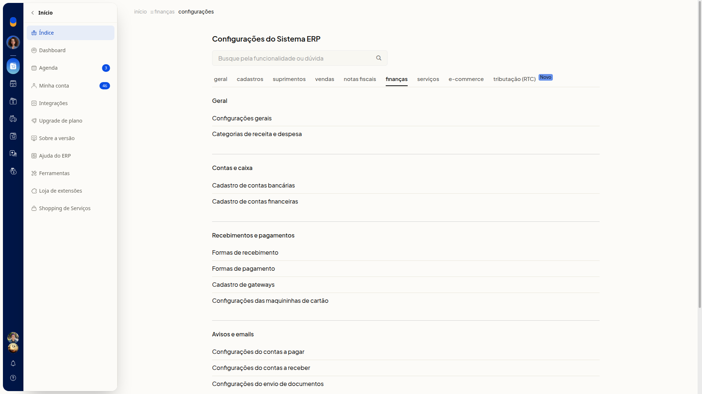
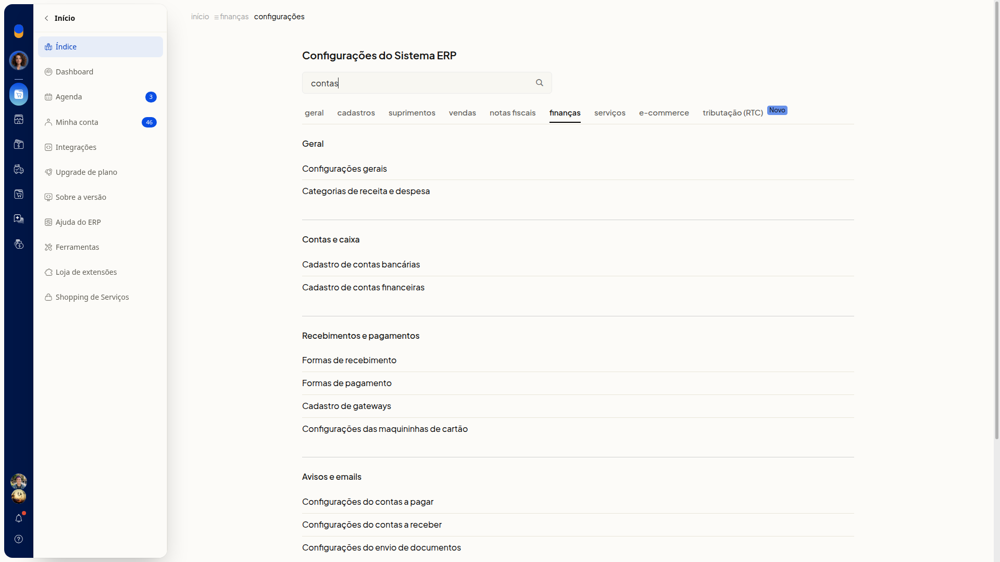

Como consultar o índice de configurações de Finanças
A aba Finanças é o índice de links das configurações financeiras do ERP da Olist. As opções ficam agrupadas por seção, para você localizar o assunto sem preencher dados nesta tela. Não há formulário de cadastro, botão de novo registro, importação de planilha nem ação de salvar.
Importante
Se a opção não aparecer para você, peça acesso ao administrador da conta.
Como acessar
Acesse Configurações > Configurações ERP. Na página Configurações do Sistema ERP, selecione a aba Finanças.

Pré-requisitos
- O menu Configurações precisa estar disponível para você abrir Configurações ERP.
Grupos de configuração
Você não precisa preencher o campo Busque pela funcionalidade ou dúvida para ver o índice. Se digitar um termo, a lista de seções e links permanece completa: a pesquisa não filtra o índice nesta tela.

Se você usar o botão ao lado do campo depois de digitar, sai desta aba e vai para um índice global de resultados.
Geral
- Configurações gerais
- Categorias de receita e despesa
Contas e caixa
- Cadastro de contas bancárias
- Cadastro de contas financeiras
Recebimentos e pagamentos
- Formas de recebimento
- Formas de pagamento
- Cadastro de gateways
- Configurações das maquininhas de cartão
Avisos e emails
- Configurações do contas a pagar
- Configurações do contas a receber
- Configurações do envio de documentos
Marcadores
- Configurações dos marcadores
Clique no link da configuração que você quer ajustar.
Links relacionados
Se precisar de ajuda para localizar uma configuração, fale com o suporte.